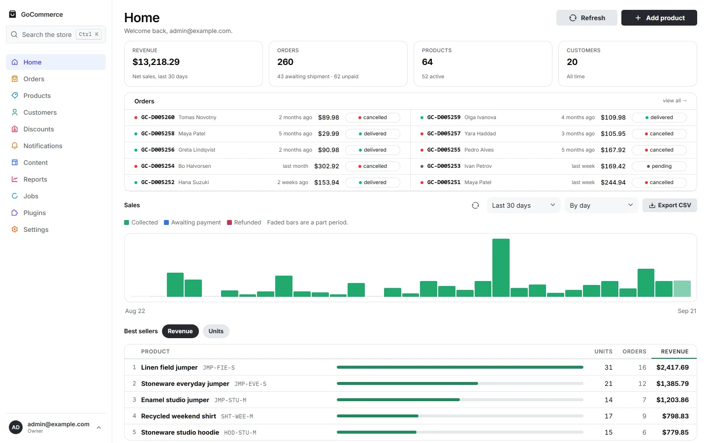
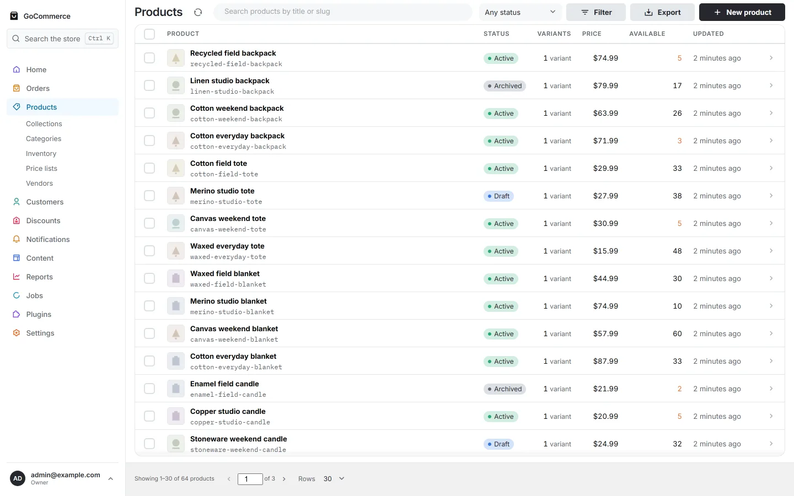
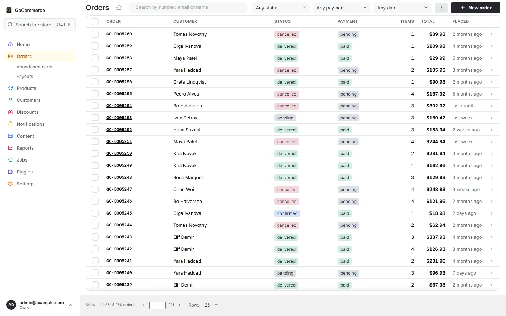
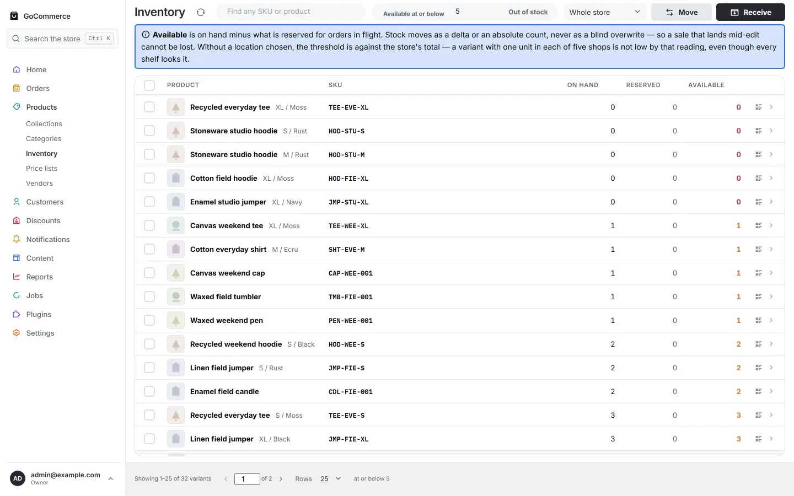
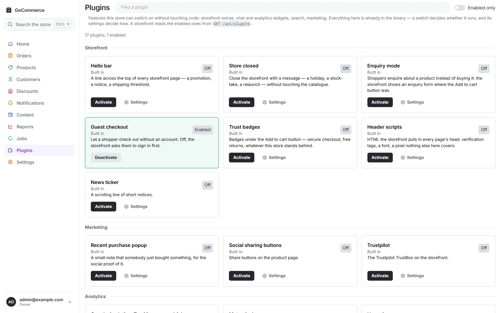
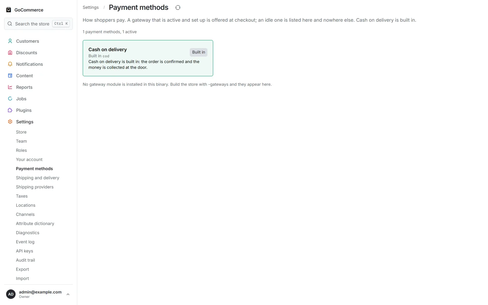
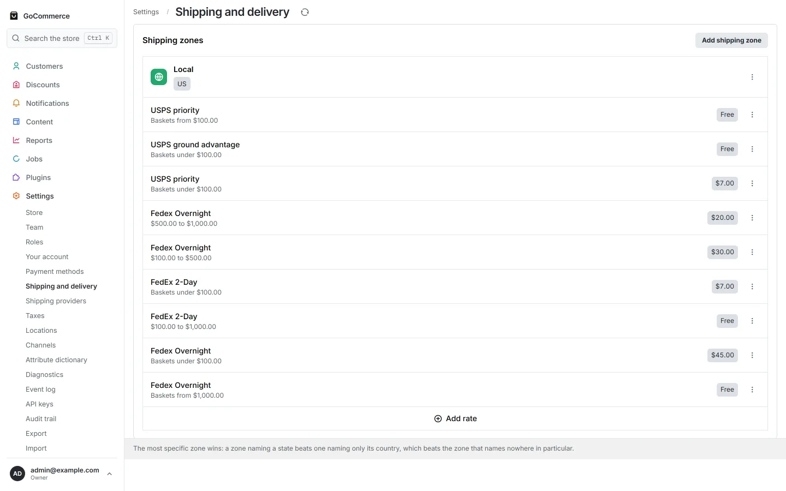
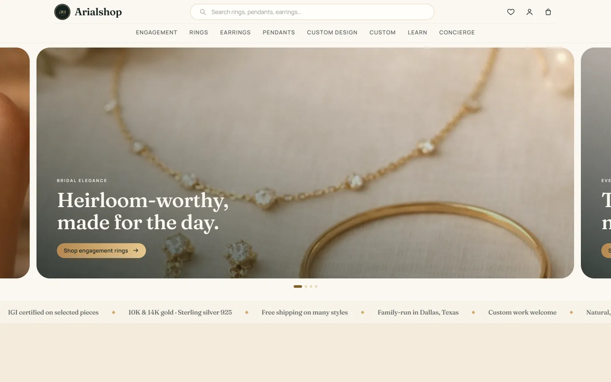

GoCommerce
For Go developers who want a commerce engine they can read, extend and deploy as one binary — APIs, admin, payments, inventory, orders, fulfillment.
- Language
- Go 1.27
- Licence
- MIT
- Release
- Pre-1.0
- Stars
- 1
GoCommerce gives you the commerce engine and the admin. Svelte Commerce gives you the storefront. PostgreSQL stores your data. Everything runs on infrastructure you control.
Svelte Commerce
SvelteKit storefront — what the customer sees
REST / JSON
GoCommerce
Catalog, carts, checkout, orders, payments, inventory, fulfillment
Svelte admin compiled into the same binary
pgx
PostgreSQL
Your database, on your infrastructure
Two open-source projects, each useful on its own, designed to fit together.
For Go developers who want a commerce engine they can read, extend and deploy as one binary — APIs, admin, payments, inventory, orders, fulfillment.
For Svelte developers who want a fast, modern storefront layer. Already headless across several backends, with GoCommerce support in development.
GoCommerce is new and its star count says so; Svelte Commerce has been public for years. Each number sits with the project it belongs to, so neither borrows the other’s history. Read from the GitHub API on .
Nothing here proxies for something else. The storefront talks to the engine over ordinary HTTP, the engine owns the commerce rules and the database, and modules are Go packages the engine calls. There is no hidden service in the middle.
Customer-facing storefront: browse, search, cart, checkout, account.
REST / JSON over HTTP
The commerce engine, and the admin that ships inside it.
Every table this store owns, on a database you run. 48 append-only migrations, applied on boot.
Stripe, Razorpay, Shiprocket, Meilisearch, Resend and 39 more — each an ordinary Go package you import, or leave out.
The admin is a SvelteKit application. It is built once, embedded with //go:embed,
and served by the process that serves the API. In production there is no Node.js to run and no
second deployment to keep in step.
Svelte admin compiled into GoCommerce binary reads and writes PostgreSQL
GoCommerce keeps production architecture deliberately small. Start with Go and PostgreSQL. Add Redis, search, object storage or queues later, when a real requirement asks for them rather than because the architecture diagram arrived that way.
gocommerce
├── Commerce API 238 operations
├── Embedded Svelte admin 61 screens
├── Payments
├── Orders and fulfillment
├── Inventory
├── Events and outbox
└── Installed modules 104 operations
│
▼
PostgreSQLgithub.com/jackc/pgx/v5, the Postgres driver. That is the
entire require block that is not marked indirect.For developers who want commerce functionality without adopting an entire proprietary platform.
Ordinary packages, interfaces and modules. “Go to definition” works on every part of your store, including the parts you did not write.
Your server, your database, your backups. No hosted control plane sits between you and your orders.
44 modules exist and a store installs the ones it needs. With none installed the engine still sells: cash on delivery and manual fulfillment are built in, because they need no third party.
The Svelte admin compiles into the binary. One artifact to build, ship and roll back.
342 operations across the engine and its modules, every one in a published OpenAPI document. The admin is a client of that contract, not an exception to it.
Money is integer minor units plus a currency code, never a float and never a formatted string. Migrations are append-only. The schema is one you could read and query yourself.
Screenshots from the running panel, not mockups. The store behind them was filled by the project’s own demo seeder: 64 products, 260 orders across 150 days.

Net sales, orders awaiting shipment, a sales chart by day, and best sellers ranked by revenue or units.

Status, variants, price and available stock per product, with search, filters and CSV export.

Fulfillment and payment state are tracked separately, because an order can be paid and unshipped.

Stock per SKU per location, with a ledger behind every movement rather than one mutable number.

Features already compiled into the binary, switched on per store. A storefront reads the enabled ones from GET /api/plugins.

Only providers compiled into this build appear. Ask the store to refund through one that is not installed and it refuses rather than failing quietly.

Zones and rates, with carrier modules plugging in beside the rates you set by hand.
The admin calls 142 documented admin endpoints, and every one is in the same OpenAPI document your integrations read. There is no undocumented channel the panel uses and you cannot — those endpoints are privileged, not private.
Svelte Commerce is the customer-facing layer: browse, search, cart, checkout and account, built with SvelteKit. Below is a live store running on it.

Connector: in development
Svelte Commerce is headless across several backends today — Medusa, Shopify, Saleor, Vendure, WooCommerce and Litekart. GoCommerce is not one of them yet. The connector that maps the GoCommerce API onto the storefront’s data layer is being written and is not published.
Until it is, the two halves of this page are two good projects rather than one wired stack. That is the honest state of it, and it is the single most useful thing anybody could help with.
Help build the connector44 modules live in the repository. Every one is an ordinary Go package: import it, pass it a config struct, and it is installed. Leave it out and none of its code is in your binary.
Installing a module is a slice entry, not a plugin registry
import (
"github.com/misiki/gocommerce/core"
stripe "github.com/misiki/gocommerce/ext/payments-stripe"
shiprocket "github.com/misiki/gocommerce/ext/fulfill-shiprocket"
meilisearch "github.com/misiki/gocommerce/ext/search-meilisearch"
)
modules := []gocommerce.Module{
stripe.New(stripe.Config{}),
shiprocket.New(shiprocket.Config{}),
meilisearch.New(meilisearch.Config{}),
}
app, err := gocommerce.New(gocommerce.Config{
DBURL: os.Getenv("DATABASE_URL"),
Addr: ":8080",
Currency: "USD",
AdminTokens: []string{os.Getenv("GOCOMMERCE_ADMIN_TOKEN")},
}, modules...)Adapted from examples/store/main.go. Everything a store installs is visible on one screen, and every name in it resolves.
No cloud account, no hosted control plane, no signup. You need Go 1.27 and a PostgreSQL you can reach.
Clone it, point it at a database, run it
# 1 — get the source
git clone https://github.com/misiki-in/gocommerce
cd gocommerce
# 2 — a database for it to own
createdb mystore
# 3 — where it lives, and who may administer it
export DATABASE_URL=postgres://localhost/mystore
export GOCOMMERCE_ADMIN_TOKEN=$(openssl rand -hex 32)
export GOCOMMERCE_ADMIN_EMAIL=you@example.com
export GOCOMMERCE_ADMIN_PASSWORD='a password you choose'
# 4 — migrations run on boot, then it serves
go run ./cmd/gocommerce serveAdmin panel
localhost:8080
Sign in with the email and password you just set.
API documentation
localhost:8080/docs
The OpenAPI contract this build actually serves.
The catalog
localhost:8080/api/products
Public and unauthenticated — the route a storefront calls.
./cmd/gocommerce is the reference binary and installs every module, which makes it
useful for reading the API contract. A real store is its own small main() that
installs only what it needs — that is examples/store.
The store already knows what customers bought, abandoned and returned, and the engine that records those events can act on them. Some of that is built and some is not. This says which.
In the repository, tested, running today.
order.paid,
order.shipped, cart.abandoned and the rest, written in the same
transaction as the state change, so an event cannot be lost or invented.Designed, not built. Do not plan a launch around these.
Consent, frequency caps and quiet hours are part of that design rather than an afterthought: a marketing engine that cannot be told to stop is a liability, not a feature.
APIs may still change while the architecture settles. That is the cost of arriving early, and the reason this is the best moment to influence the project.
The engine carries 1,036 tests and a documented contract for every route, so a pull request has something to prove itself against.
View open issues Join the DiscordGo behind it. Svelte in front. Your infrastructure underneath.